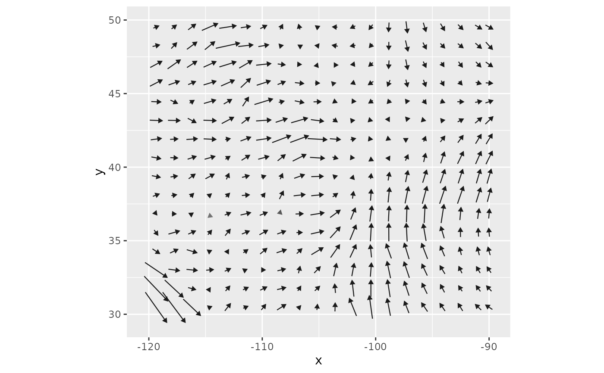

Net flow of a wind rose, as a wind field
net_flow.RdSummarizes each grid cell of a wind rose as a single vector: the net flow, or the vector sum
of the flows toward the cell's eight neighbors. This is the direction and rate at which the
rose moves material on balance, as seen by the connectivity models, and is the vector form of
the bearing and net statistics computed by geom_wind_rose() and fortify(). The result
is a wind_field(), so it can be drawn with geom_wind_arrow() or geom_wind_trail(), or
used anywhere else a wind field is.
Value
A wind_field whose u and v layers are the eastward and northward components of
net flow, in m/s if the rose was built with trans = 1 from wind speeds in m/s, like any
other wind field, so that geom_wind_arrow(), geom_wind_trail(), and wind_trails()
(including their hours arguments) treat it correctly. For other trans, units are those
of the transformed speeds. The net statistic computed by fortify() for a wind rose is
the same quantity in km/h. Cells that are NA in rose are NA in the result.
Details
Flow toward each neighbor is conductance times the distance to that neighbor, and net flow is the sum of these flows, each pointing toward its neighbor. Flow is used rather than conductance itself because conductance is a rate per grid cell: on a longitude/latitude grid, east and west neighbors are closer together toward the poles, so a vector sum of conductances would be distorted by latitude, while flow is not.
Net flow is also the local drift velocity of a random_walk() on the rose: the rate at which
a particle in the cell moves, on balance, before any decay. (The walk's latitude correction
adds equal conductance toward east and west neighbors, so it leaves drift unchanged.)
Net flow is not the same as the mean wind vector. wind_rose() allocates each wind
observation between the two neighbors whose bearings bracket its direction, and the vector
sum of the two parts is shorter than the original wind unless it blows straight toward a
neighbor: by up to about 8% for winds halfway between neighbors. With trans = 1, net flow
is therefore typically a few percent less than the mean wind speed, in nearly the
same direction; where winds from different directions largely cancel, the two can differ
more in both speed and direction. With other values of trans, observations are weighted by
transformed speed, so net flow emphasizes the winds that matter for conductance (e.g. strong
winds, for trans > 1). Where wind direction is variable, net flow can be small even when
winds are strong; the total flow (the speed computed by fortify()) describes overall wind
strength regardless of direction.
See also
geom_wind_rose() for drawing the full rose, and the flux output of
random_walk() for the net transport of dispersing material.
Examples
rose <- windscape_example("wind_rose")
f <- net_flow(rose)
f
#> class : SpatRaster
#> size : 64, 96, 2 (nrow, ncol, nlyr)
#> resolution : 0.3157895, 0.3174603 (x, y)
#> extent : -120.1579, -89.84211, 29.84127, 50.15873 (xmin, xmax, ymin, ymax)
#> coord. ref. : lon/lat WGS 84 (EPSG:4326)
#> source(s) : memory
#> names : u, v
#> min values : -1.956252, -4.925806
#> max values : 4.523033, 3.596868
library(ggplot2)
ggplot(f, aes(x, y)) +
geom_wind_arrow() +
coord_quickmap()
